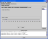
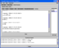
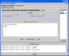
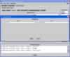

Archive:
|
The “Archive” module is only available for team sessions, because only the team’s collaboration content is saved for future user retrieval. The archive access is a three or four step process. First, select a collaboration module such as Chat, Sound, Textpad, or File Transfer. Second, select a “Data Selection” method from the list of “Today”, “Last N”, or “Time Range”. Third, click on the “Next” button. Depending on what “Data Selection” method you have chosen, “Last N” or “Time Range”, you have to provide further data in the fourth step. Once you see the module’s archived data you can interact with them as the collaboration module’s functionality allows you to. For example, in the sound module, you can play a sound message, and in the file transfer module, you can download archived files to your workstation. The textpad archive module is a special case since it allows you to not just view the document but also to further edit it. To do so, select a text document from the “Textpads” list and then click on the “Add To Edit List” button. An archive textpad dialog box appears with further instructions. It prompts you to go to the textpad module in the current active session. In the textpad module request control if you don’t have it yet. Then, click on the “Edit” button, which opens the “Textpad Edit List” dialog. From there, you will see all the textpad documents that you have selected via the textpad archive edit process. Highlight one textpad entry from the list and then click on the “Select” button. Now, you should see the text of the archived textpad in the text area and you can start to edit the contents. |